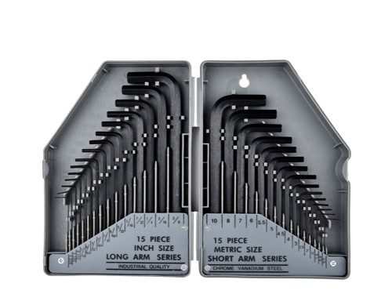
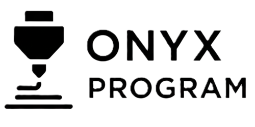

육각 형태의 키를 이용해 미끄럼 없이 안정적으로 회전력을 전달할 수 있다.
크기가 다양해 기계 조립, 가구 조립, 3D 프린터 조정 등 정밀·산업 작업에서 광범위하게 사용된다.
L자 구조 덕분에 좁은 공간 접근성과 높은 토크 제공이 모두 가능하다.
볼트의 육각 홈에 렌치를 완전히 삽입하여 헛돌지 않도록 고정한다.
짧은 팔로 빠르게 돌리거나, 긴 팔로 더 큰 토크를 주어 단단하게 조인다.
풀 때는 체중을 이용해 천천히 힘을 주며 나사산 손상 없이 회전시킨다.